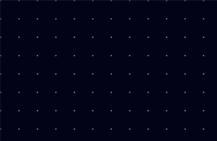
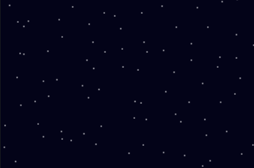
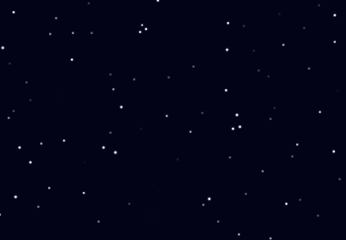

Pejibaye Blog
Pejibaye Blog
Starry Sky in HTML5 Canvas - Part 1
In my spare time I often enjoy creating visualizations using HTML5 canvas. I'm planning to do a little presentation about this so I thought a good way to get started was to create a blog post explaining how to do a simple one.
This tutorial will teach you how to create something like the image below from scratch!

IMPORTANT -- you can try out the result of this part of the tutorial by visiting this CodeSandbox. However, I encourage you to read the blog post and try to follow along to understand how and why it works.
First, you will need an HTML file, let's name it index.html:
<!DOCTYPE html> <html> <head> <title>Starry sky</title> <style> body, html { padding: 0; margin: 0; } canvas { position: absolute; } </style> </head> <body> <canvas id="canvas"></canvas> </body> </html>
Nothing crazy so far, just some styles and a canvas element.
Next, let's create a JavaScript file. Let's name this index.js.
const backgroundColor = "#030318"; const width = window.innerWidth; const height = window.innerHeight; const canvas = document.querySelector("#canvas"); const ctx = canvas.getContext("2d"); canvas.width = width; canvas.height = height; function render() { ctx.fillStyle = backgroundColor; ctx.fillRect(0, 0, width, height); } render();
In the code above, we set the canvas' width and height so it takes up the whole window.
Then, in the render() function, we fill the canvas with the background color.
If you run it on your browser, it will look like this:
Yup. Not very interesting. Let's put something in there!
Let's add some code to our index.js file to draw some stars.
First, let's have a function that creates the stars.
function createStars(width, height, spacing) { const stars = []; for (let x = 0; x < width; x += spacing) { for (let y = 0; y < height; y += spacing) { const star = { x: x, y: y }; stars.push(star); } } return stars; } const stars = createStars(width, height, 30);
The spacing parameter will control the spacing between stars.
Then, let's update our render() function so it renders the stars.
function render() { ctx.fillStyle = backgroundColor; ctx.fillRect(0, 0, width, height); stars.forEach(function(star) { const x = star.x; const y = star.y; const r = 5; ctx.beginPath(); ctx.fillStyle = "rgb(255, 255, 255)"; ctx.arc(x, y, r, 0, Math.PI * 2); ctx.fill(); }); }
For our purposes, a star is a circle, so we can use the arc() function to draw our stars.
An explanation of the parameters:
-
xandyare used for the position. -
ris used for the radius of the circle. -
0andMath.PI * 2are the start and end angle, respectively. A full circle goes from0to2pi.
The line ctx.fillStyle = "rgb(255, 255, 255)"; is used to set the color of the circle to white.
Let's see what we get now:

It's definitely a bit more interesting. But it doesn't look like a starry sky at all! Stars don't usually look so uniform and boring. We need to add some randomness.
Let's create a function called randomInt(max) that will return a random number:
function randomInt(max) { return Math.floor(Math.random() * max); }
Then, let's use these random numbers when creating our stars:
function createStars(width, height, spacing) { const stars = []; for (let x = 0; x < width; x += spacing) { for (let y = 0; y < height; y += spacing) { const star = { x: x + randomInt(spacing), y: y + randomInt(spacing) }; stars.push(star); } } return stars; }

That looks already almost real! Now let's make it so the stars are different sizes. To do this, we will need a different radius for each star, so we will add it to the star objects.
const maxStarRadius = 1.5; function createStars(width, height, spacing) { const stars = []; for (let x = 0; x < width; x += spacing) { for (let y = 0; y < height; y += spacing) { const star = { x: x + randomInt(spacing), y: y + randomInt(spacing), r: Math.random() * maxStarRadius, }; stars.push(star); } } return stars; }
Then, we will update the render() function so it uses the star's radius when drawing.
While we're at it, let's extract the circle drawing logic to a new function as well.
function fillCircle(ctx, x, y, r, fillStyle) { ctx.beginPath(); ctx.fillStyle = fillStyle; ctx.arc(x, y, r, 0, Math.PI * 2); ctx.fill(); } function render() { ctx.fillStyle = backgroundColor; ctx.fillRect(0, 0, width, height); stars.forEach(function(star) { const x = star.x; const y = star.y; const r = star.r; fillCircle(ctx, x, y, r, "rgb(255, 255, 255)"); }); }

Much better! Now the stars are all different sizes!
This is all for part 1. You can continue reading Part 2, where we will add a moon and make our stars flicker!
Comments
Comments powered by Disqus